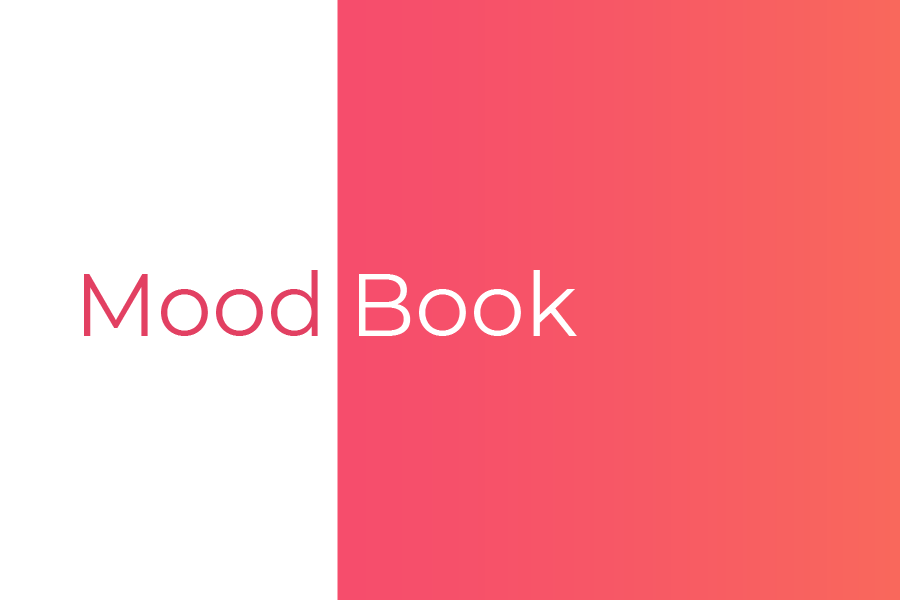
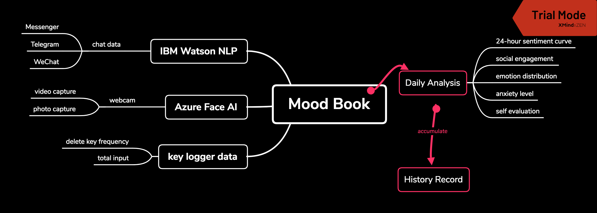

Mood Book
Mood Book is an application prototype built during HackNYU, February 2019. It gathers user's oftentimes-ignored data from their desktop and mobile devices, analyzes the data, and in this way keeps track of their emotional status and mental health.
Inspiration:
Most of us today spend more time and are more intimate with our mobile devices than with other people - a fact.
People are concerned with their mental health and are facing potential problems, for example, anxiety, depression, and etc. - another fact.
Why not collect data from our electronic devices, make sense of them, and make them helpful for us to be more aware of our recent mental status?
Logic Flow:
